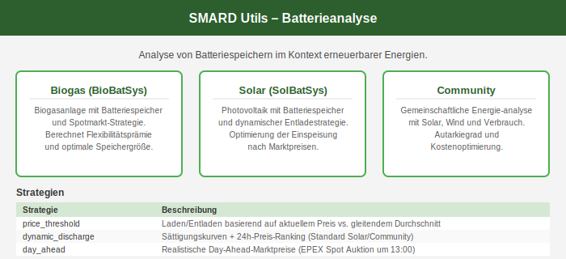
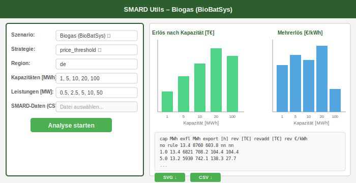
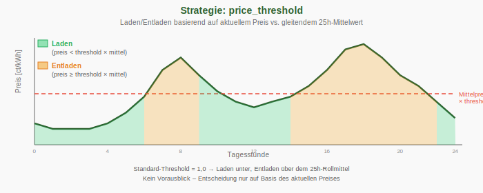
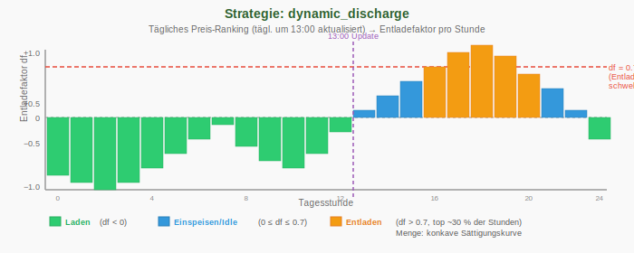
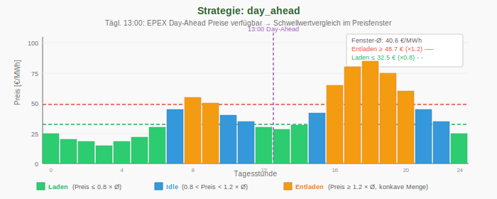

Webanwendung
Die SMARD-Utils Webanwendung stellt die drei Analyseszenarien über ein Browserformular bereit – ohne Kommandozeile. Ergebnisse werden als interaktiver Balkendiagramm (SVG) und als Text-Tabelle dargestellt; beide können heruntergeladen werden.
Zugang
Die öffentliche Instanz ist erreichbar unter:
https://eduard.uber.space/smardutils/
Beim ersten Aufruf erscheint eine kurze Einwilligungsseite. Nach dem Bestätigen der Checkbox wird eine Sitzung angelegt und die Startseite geöffnet. Es wird kein Passwort benötigt.
Startseite
Die Startseite zeigt drei Szenario-Karten und eine Strategieübersicht. Ein Klick auf eine Karte öffnet das Analyse-Formular für das gewählte Szenario.
Analyse-Formular
Das Formular ist für alle drei Szenarien identisch aufgebaut. Links befindet sich das Eingabeformular, rechts erscheinen nach dem Start die Ergebnisse.
Formularfelder:
| Feld | Bedeutung |
|---|---|
| Szenario | Biogas / Solar / Community – jederzeit wechselbar |
| Strategie | price_threshold, dynamic_discharge oder day_ahead |
| Region | de (Deutschland) oder lu (Luxemburg) |
| Kapazitäten [MWh] | Kommagetrennte Liste der Speichergrößen, z.B. 1, 5, 10, 20, 100 |
| Leistungen [MW] | Kommagetrennte Maximalleistungen (gleiche Länge wie Kapazitäten) |
| Eigene SMARD-Daten | Optional: eigene SMARD-CSV hochladen statt Standarddatei |
Mit Analyse starten wird die Berechnung ausgeführt. Je nach Kapazitätsliste und Datengröße dauert dies 5–30 Sekunden.
Ergebnisse
Nach der Berechnung erscheinen rechts neben dem Formular:
- Balkendiagramm (SVG): Zwei Charts nebeneinander – Erlös nach Kapazität und Mehrerlös pro kWh Kapazität.
- Texttabelle: Dieselbe Ausgabe wie das CLI-Werkzeug, mit allen Spalten (Autarkierate, Spotpreis, Fixpreis, Erlös usw.).
- Download-Buttons: SVG-Chart und CSV-Ergebnisse können direkt gespeichert werden.
Szenarien in der Webanwendung
Biogas (BioBatSys)
Simuliert eine Biogasanlage mit konstanter Einspeiseleistung (Standard: 1.000 kW). Der Speicher verschiebt die Einspeisung in hochpreisige Stunden. Zusätzlich wird die EEG-Flexibilisierungsprämie berechnet, sofern die Einspeisestunden den Grenzwert unterschreiten.
Standardwerte: Kapazitäten 1, 5, 10, 20, 100 MWh –
Leistungen 0.5, 2.5, 5, 10, 50 MW – Region de
Solar (SolBatSys)
Simuliert einen großen PV-Park (Standard: 10 MWp). Die Erzeugung wird aus dem SMARD-Profil proportional skaliert. Der Speicher verlagert Energie von der Mittagsspitze in preisstärkere Stunden. Als Referenz dient die Zeile always (sofortige Einspeisung ohne Speicher).
Standardwerte: Kapazitäten 1, 5, 10, 20, 50, 70 MWh –
Leistungen 0.5, 2.5, 5, 10, 25, 35 MW – Region de
Community (SmardAnalyseSys)
Simuliert ein Wohnquartier (Standard: ~6.000 Haushalte in Luxemburg) mit gemeinsamer Solar- und Windanlage (je 5 MW). Bewertet werden Autarkierate und Kosteneinsparungen gegenüber Spot- und Fixpreistarifen.
Standardwerte: Kapazitäten 0.1, 1, 5, 10, 20 MWh –
Leistungen 0.05, 0.5, 2.5, 5, 10 MW – Region lu
Strategien in der Webanwendung
Die Strategie wird im Formular ausgewählt und beeinflusst, in welchen Stunden geladen bzw. entladen wird. Ausführliche Beschreibung: Strategien (CLI).
price_threshold
Vergleicht den aktuellen Spotpreis mit dem gleitenden 25-Stunden-Mittelwert. Ist der Preis unterhalb der Schwelle, wird geladen; oberhalb wird entladen. Einfach und robust – Standard für das Biogas-Szenario.
dynamic_discharge
Erstellt täglich um 13:00 Uhr ein Preisranking der nächsten 24 Stunden. Die teuersten ~30 % der Stunden werden zum Entladen genutzt, die günstigsten zum Laden. Die Entlademenge folgt einer konkaven Sättigungskurve. Standard für Solar und Community.
day_ahead
Simuliert den realen Börsenbetrieb: EPEX-Spot-Preise werden täglich um 13:00 Uhr für den Folgetag veröffentlicht. Die Strategie plant den Lade-/Entladeplan nur auf Basis der tatsächlich verfügbaren Preisinformationen – ohne Blick in die Zukunft.
Lokale Installation
Die Webanwendung kann lokal betrieben werden:
- Repository klonen und Paket installieren (siehe Installation)
- Zusätzliche Webapp-Abhängigkeiten installieren:
pip install flask flask-cors
- Webapp starten:
python webapp/app.py
- Browser öffnen:
http://localhost:5000
Im lokalen Betrieb entfällt der URL-Präfix /smardutils;
die Anwendung läuft direkt auf Port 5000.